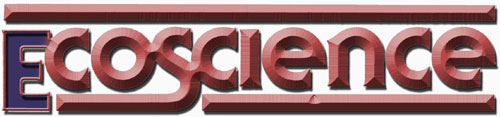

Paul Ehrlich (Bing Professor of Population Studies and Professor of Biological Siences, Stanford University) and Anne Ehrlich (Senior Research Associate, Department of Biological Sciences, Stanford) are familiar names to ecologists and environmentalists everywhere. As well they should be. Because it was Paul and Anne who-through their writing and research-gave special meaning to the words "population", "resources", and "environment" in the late 1960's. (They also coined the term coevolution, and did a lot to make ecology the household word it is today.) But while most folks are aware of the Ehrlichs' popular writing in the areas of ecology and overpopulation (most of us-for instance-have read Paul's book The Population Bomb) ... far too few people have any idea of how deeply the Ehrlichs are involved in ecological research (research of the type that tends to be published only in technical journals and college textbooks). That's why it pleases us to be able to present-on a regular basis-the following semi-technical column by authors/ecologists/educators Anne and Paul Ehrlich.
Many people seem to wonder whether ecologists have gone off the deep end in the struggle to protect endangered species. We are often asked, "Isn't it preposterous that the existence of such an insignificant fish as the snail darter should be allowed to stop a public works project like We TVA's Tellico Dam ... a structure in which millions of taxpayers' dollars have already been invested? "
Our answer is always the same: The Tellico Dam should have been stopped dead in its tracks even if it had been a very important and worthwhile project (which, according to much testimony, it wasn't). In fact, even if the TVA had followed the letter of the law-instead of trying to evade existing legislation-the dam could not have been allowed to destroy that one little species of fish.
As many of you are aware, the ecological systems of our planet constitute a gigantic life-support apparatus that must function smoothly if our civilization is to persist. We mentioned a few of the "public service!' functions in our column on the tropical forests (MOTHER NO. 53, page 110) ... but let us reiterate:
Ecosystems maintain the quality of the atmosphere, help to stabilize weather, provide food from the sea, control the vast majority of potential crop pests and carriers of human disease, generate and maintain soils, recycle nutrients essential to agriculture, and dispose of our wastes. Perhaps even more important, however, such systems also preserve a vast genetic "library" on which we can draw for-among other things-new domestic plants and animals, spices and medicines, organisms for scientific research, antibiotics, and so on.
Now, if everything about the life-sup port apparatus were understood, all would be well. We would be able to predict the consequences of fiddling with any part of it, and-in particular-to understand what would happen if any one element were removed from the ecosystem.
We know that many, if not most, ecosystems are quite robust ... that they will recover from various sorts of insults, and even from the extinction of populations and whole species! The fossil record reveals that the extinction of populations and species has been a regular feature of the evolutionary process on this planet for hundreds of millions of years. And, in the past century, many extinctions have been observed that have not-at least in the short term-seemed to have major deleterious effects on their respective ecosystems.
But this is not a valid reason to believe that Homo sapiens needn't be concerned about endangered specks. Human knowledge of the properties of specific ecosystems-and ecological structures in general-is extremely limited. Something can be said about their general properties-such as the way energy flows through them, or the manner in which materials cycle in them-but very little is understood of the details of how ecosystems function and, in particular, of the factors that make them stable or unstable. Biologists are just beginning to learn about the vast amount of variability present within and between natural populations ... and the significance of that variability is still in dispute. It's not yet clear how much the coevolutionary interactions between organisms in natural communities have led to stability in these communities, nor do we know how often such interactions may destabilize an ecosystem and lead to dramatic changes in its structure.
Scientists have not failed to ponder these questions ... it's just that the interactions of the many millions of kinds of earth's organisms-with each other and with the physical aspects of their environment-are extraordinarily complex. Although certain principles of ecosystem organization can be clearly perceived, ecologists are-in most cases-not in a position to predict accurately what will happen to a given system in the face of certain kinds of disturbances ... such as the destruction of populations.
There are weak analogies to this inability to forecast the future in the complex realm of the social sciences. For example, political scientists can tell you many things about the organization of the United States government, but they find it virtually impossible to foretell the precise consequences of apparently minor disturbances such as the Watergate break-in ... or even to forecast exactly the results of elections (although these scientists are fortunate enough to be able to ask individual people how they're going to vote, whereas an ecologist can't ask a snail darter what role it plays in the grander scheme of things!).
It's often contended, however, that endangered species shouldn't be allowed to stand in the way of "progress" . . . simply because it's impossible to predict the consequences of the destruction of such plants or animals. For instance, Roger Starr (a member of the editorial board of The New York Times) has argued that humanity need not worry about driving populations of species to extinction, since-as noted above- extinction has long been a feature of evolution on this planet. Starr reasons that if extinction didn't disrupt ecosystem functioning in the past, it won't do so now. This superficially cogent argument is utterly fallacious for two reasons:
First, the rate of extinction- because of habitat destruction, poisoning, and exploitation-is vastly greater today than the rates that have characterized most of the billions of years of evolutionary history. For example, the extinction rate for birds and mammals between 1630 and 1975 appears to have been 5 to 50 times as high as in the distant past, and the rate over the next 20 years is projected to be 40 to 400 times "normal".
This snowballing rate of extinction will no longer allow the losses to be made up, as they formerly were, by speciation (the evolutionary process that generates organic diversity and develops new species). After all, even though extinction is a natural process that has always accompanied speciation, Homo sapiens inherited a species-rich planet with fully functional ecosystems. Historically, extinction was more than balanced by speciation.
Thus, the second reason that the no- need- to-worry- about- extinction" argument is misleading has to do with the future of speciation. Throughout geological time, the splitting process of evolution has continually created new kinds of organisms to be "tested" by the environment. It's currently believed by most evolutionists that most speciation occurs when populations isolated from one another are subjected to very different environments and, thus, to different selection pressures. (Natural selection is simply the differential reproduction of genetic types, or genotypes ... and the genotype best suited for reproduction in one environment may not be the best in another environment.)
Human intervention, however, usually seems to work against the process of speciation. For example, it seems likely that-in the next half - century- the rain forests of South America will be reduced to a few scattered preserves. If this happens, most of the larger organisms in those limited areas will-in a relatively short time become extinct as a result of natural population fluctuations. In order to minimize this loss of species, attempts will almost certainly be made to move animals from preserves where they are abundant to other protected areas where those species are scarce. However, this process of moving organisms around-which has already begun with zoos and nature-preserve breeding programs-reduces or eliminates the isolation between the preserves ... and acts against the speciation mechanism. Although speciation may still be able to occur if selection pressures are strong enough (and if the preserves are maintained for thousands of years!), its rate will, at best, be greatly reduced.
And, in terms of a human time scale, the development of new species has always been very slow ... slow enough that the splitting of an evolutionary line of animals has not been observed in the hundred-plus years since Darwin, although extinctions have been numerous during that same century.
So the snail darter, the Furbish lousewort, the mountain gorilla, the blue whale, and all of the other endangered species can be viewed as symbols of a much more general impoverishment of earth's living biota. Beyond them, hundreds of thousands of unsung species and -probably equally important- millions of genetically distinct populations have either gone extinct in the past few decades or will do so in the next few.
As we indicated, it's not possible to predict the consequences of-or even to observe-the vast majority of these extinction events. But it is easy to predict their eventual cumulative effect: the breakdown-first regional and then global-of the all-important life-support functions of natural ecosystems.
To make an analogy: Suppose you saw a group of people prying rivets out of the wing of an airplane you were about to board. Imagine, also, that you didn't know the exact details of the airplane's construction, but were aware that the loss of some rivets wouldn't necessarily cause the wing to fail. Would this make you relaxed about the prospect of flying in that airplane? Would you be satisfied if you asked one of the people to stop prying out a rivet and that person simply said, "You can't prove that the loss of this rivet will fatally weaken the wing, so it's perfectly all right for me to take it out"? Would you be relieved if he said, "Don't worry ... see, I've just taken out the rivet and the wing hasn't fallen off"?
You would, of course, have to be insane to fly in that airplane after such a conversation. Needless to say, the treatment of that imaginary wing bears considerable resemblance to the present treatment of the life-support systems of Spaceship Earth ... except that we have no option as to whether or not we'll fly on her!
The organisms being exterminated are very much like the rivets in the airplane's wing. It's virtually impossible to prove that the removal of any one-or any group-will fatally weaken the ecosystem. And the lack of catastrophic failure immediately following the removal is no guarantee that disintegration won't result in a later period of stress.
Yet, the vast majority of Homo sapiens goes merrily on its way ... popping off rivets without the vaguest notion of the probable consequences of such behavior. But we can, at least, be sure that those consequences will not be pleasant. They can be expected to include the collapse of fisheries, enormous pest outbreaks, epidemics, the advance of deserts, erosion, the exhaustion of freshwater sources, the progressive failure of highyield agriculture and forestry, and climatic changes that may induce catastrophic famines.
The avoidance of such events seems to be a powerful argument for taking extreme precautions to prevent an increase-or even a continuation-of current extinction rates. Rather than exterminating other organisms more rapidly, we should be searching hard for ways both to slow that rate of loss and to ensure the continuation of the speciation process at normal levels.
Of course, there are also compassionate and esthetic arguments for protecting what are -as far as we know for sure -the only other living beings in the universe. As the great French anthropologist, Claude Levi-Strauss, once said: Any bug that is sprayed with pesticides is "an irreplaceable marvel equal to the works of art which we religiously preserve in museums". There is some hope that we might persuade others of the esthetic value of such organic diversity ... especially if they can be made more intimately familiar with the beauty and complexity of organisms. But the compassionate argument hinges upon such things as upbringing, values, and emotions ... and those adults who do not now accept this sort of reasoning are unlikely to be converted. Therefore-as strong as esthetic arguments may be to many people-we believe that the battle to save organic diversity can only be won in today's society on the most practical of grounds.
Therefore, it's against this backdrop that we take our stand with the snail darter. True, the extermination of this small fish alone will probably not precipitate an ecosystem collapse. But no more purposeful extinctions by humanity can be permitted ... a firm line must be drawn NOW! Because, sooner or later, a Tellico Dam or its equivalent will threaten every population of nonhuman organisms on the face of this planet. Sooner or later, each body of water will be needed as a source or a sink for some human activity that will be lethal to its natural occupants. Perhaps, indeed, every species will be found to occupy a piece of land that could be plowed, grazed, mined, logged, paved, or otherwise disrupted by someone who sees a profit in it.
The hour has come for humanity to recognize that its fate is inextricably tied up with the snail darters of our planet ... to recognize that ever-increasing numbers of human beings -each eternally trying to co-opt a larger share of the earth's resources- endanger, not only the other species of our planet, but humanity itself.
|
 |
|
|